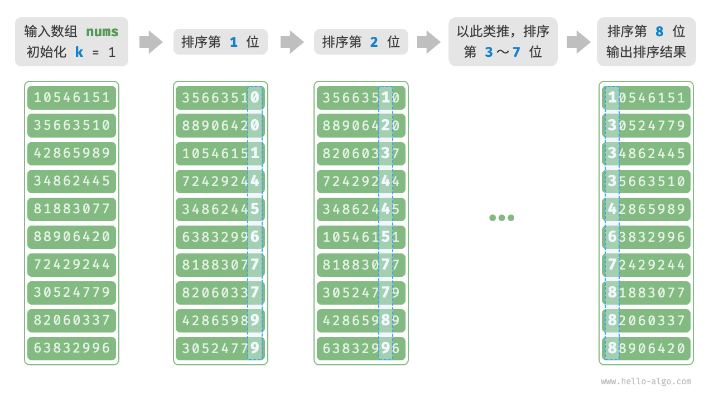

基数排序
上一节介绍了计数排序，它适用于数据量 $n$ 较大但数据范围 $m$ 较小的情况。假设我们需要对 $n = 10^6$ 个学号进行排序，而学号是一个 $8$ 位数字，这意味着数据范围 $m = 10^8$ 非常大，使用计数排序需要分配大量内存空间，而基数排序可以避免这种情况。
「基数排序 radix sort」的核心思想与计数排序一致，也通过统计个数来实现排序。在此基础上，基数排序利用数字各位之间的递进关系，依次对每一位进行排序，从而得到最终的排序结果。
算法流程
以学号数据为例，假设数字的最低位是第 $1$ 位，最高位是第 $8$ 位，基数排序的流程如下图所示。
- 初始化位数 $k = 1$ 。
- 对学号的第 $k$ 位执行“计数排序”。完成后，数据会根据第 $k$ 位从小到大排序。
- 将 $k$ 增加 $1$ ，然后返回步骤
2.继续迭代，直到所有位都排序完成后结束。

下面剖析代码实现。对于一个 $d$ 进制的数字 $x$ ，要获取其第 $k$ 位 $x_k$ ，可以使用以下计算公式：
$$ x_k = \lfloor\frac{x}{d^{k-1} }\rfloor \bmod d
$$
其中 $\lfloor a \rfloor$ 表示对浮点数 $a$ 向下取整，而 $\bmod \: d$ 表示对 $d$ 取模（取余）。对于学号数据，$d = 10$ 且 $k \in [1, 8]$ 。
此外，我们需要小幅改动计数排序代码，使之可以根据数字的第 $k$ 位进行排序：
- "Python" ```python def digit(num: int, exp: int) -> int: """获取元素 num 的第 k 位，其中 exp = 10^(k-1)""" // 传入 exp 而非 k 可以避免在此重复执行昂贵的次方计算 return (num // exp) % 10
def counting_sort_digit(nums: list[int], exp: int): """计数排序（根据 nums 第 k 位排序）""" // 十进制的位范围为 0~9 ，因此需要长度为 10 的桶数组 counter = [0] 10 n = len(nums) // 统计 0~9 各数字的出现次数 for i in range(n): d = digit(nums[i], exp) // 获取 nums[i] 第 k 位，记为 d counter[d] += 1 // 统计数字 d 的出现次数 // 求前缀和，将“出现个数”转换为“数组索引” for i in range(1, 10): counter[i] += counter[i - 1] // 倒序遍历，根据桶内统计结果，将各元素填入 res res = [0] n for i in range(n - 1, -1, -1): d = digit(nums[i], exp) j = counter[d] - 1 // 获取 d 在数组中的索引 j res[j] = nums[i] // 将当前元素填入索引 j counter[d] -= 1 // 将 d 的数量减 1 // 使用结果覆盖原数组 nums for i in range(n): nums[i] = res[i]
def radix_sort(nums: list[int]): """基数排序""" // 获取数组的最大元素，用于判断最大位数 m = max(nums) // 按照从低位到高位的顺序遍历 exp = 1 while exp <= m: // 对数组元素的第 k 位执行计数排序 // k = 1 -> exp = 1 // k = 2 -> exp = 10 // 即 exp = 10^(k-1) counting_sort_digit(nums, exp) exp *= 10
- "C++"
```cpp
/* 获取元素 num 的第 k 位，其中 exp = 10^(k-1) */
int digit(int num, int exp) {
// 传入 exp 而非 k 可以避免在此重复执行昂贵的次方计算
return (num / exp) % 10;
}
/* 计数排序（根据 nums 第 k 位排序） */
void countingSortDigit(vector<int> &nums, int exp) {
// 十进制的位范围为 0~9 ，因此需要长度为 10 的桶数组
vector<int> counter(10, 0);
int n = nums.size();
// 统计 0~9 各数字的出现次数
for (int i = 0; i < n; i++) {
int d = digit(nums[i], exp); // 获取 nums[i] 第 k 位，记为 d
counter[d]++; // 统计数字 d 的出现次数
}
// 求前缀和，将“出现个数”转换为“数组索引”
for (int i = 1; i < 10; i++) {
counter[i] += counter[i - 1];
}
// 倒序遍历，根据桶内统计结果，将各元素填入 res
vector<int> res(n, 0);
for (int i = n - 1; i >= 0; i--) {
int d = digit(nums[i], exp);
int j = counter[d] - 1; // 获取 d 在数组中的索引 j
res[j] = nums[i]; // 将当前元素填入索引 j
counter[d]--; // 将 d 的数量减 1
}
// 使用结果覆盖原数组 nums
for (int i = 0; i < n; i++)
nums[i] = res[i];
}
/* 基数排序 */
void radixSort(vector<int> &nums) {
// 获取数组的最大元素，用于判断最大位数
int m = *max_element(nums.begin(), nums.end());
// 按照从低位到高位的顺序遍历
for (int exp = 1; exp <= m; exp *= 10)
// 对数组元素的第 k 位执行计数排序
// k = 1 -> exp = 1
// k = 2 -> exp = 10
// 即 exp = 10^(k-1)
countingSortDigit(nums, exp);
}
- "Java" ```java / 获取元素 num 的第 k 位，其中 exp = 10^(k-1) / int digit(int num, int exp) { // 传入 exp 而非 k 可以避免在此重复执行昂贵的次方计算 return (num / exp) % 10; }
/ 计数排序（根据 nums 第 k 位排序） / void countingSortDigit(int[] nums, int exp) { // 十进制的位范围为 0~9 ，因此需要长度为 10 的桶数组 int[] counter = new int[10]; int n = nums.length; // 统计 0~9 各数字的出现次数 for (int i = 0; i < n; i++) { int d = digit(nums[i], exp); // 获取 nums[i] 第 k 位，记为 d counter[d]++; // 统计数字 d 的出现次数 } // 求前缀和，将“出现个数”转换为“数组索引” for (int i = 1; i < 10; i++) { counter[i] += counter[i - 1]; } // 倒序遍历，根据桶内统计结果，将各元素填入 res int[] res = new int[n]; for (int i = n - 1; i >= 0; i--) { int d = digit(nums[i], exp); int j = counter[d] - 1; // 获取 d 在数组中的索引 j res[j] = nums[i]; // 将当前元素填入索引 j counter[d]--; // 将 d 的数量减 1 } // 使用结果覆盖原数组 nums for (int i = 0; i < n; i++) nums[i] = res[i]; }
/ 基数排序 / void radixSort(int[] nums) { // 获取数组的最大元素，用于判断最大位数 int m = Integer.MIN_VALUE; for (int num : nums) if (num > m) m = num; // 按照从低位到高位的顺序遍历 for (int exp = 1; exp <= m; exp *= 10) // 对数组元素的第 k 位执行计数排序 // k = 1 -> exp = 1 // k = 2 -> exp = 10 // 即 exp = 10^(k-1) countingSortDigit(nums, exp); } ```
!!! question "为什么从最低位开始排序？"
在连续的排序轮次中，后一轮排序会覆盖前一轮排序的结果。举例来说，如果第一轮排序结果 $a < b$ ，而第二轮排序结果 $a > b$ ，那么第二轮的结果将取代第一轮的结果。由于数字的高位优先级高于低位，因此应该先排序低位再排序高位。
算法特性
相较于计数排序，基数排序适用于数值范围较大的情况，但前提是数据必须可以表示为固定位数的格式，且位数不能过大。例如，浮点数不适合使用基数排序，因为其位数 $k$ 过大，可能导致时间复杂度 $O(nk) \gg O(n^2)$ 。
- 时间复杂度为 $O(nk)$：设数据量为 $n$、数据为 $d$ 进制、最大位数为 $k$ ，则对某一位执行计数排序使用 $O(n + d)$ 时间，排序所有 $k$ 位使用 $O((n + d)k)$ 时间。通常情况下，$d$ 和 $k$ 都相对较小，时间复杂度趋向 $O(n)$ 。
- 空间复杂度为 $O(n + d)$、非原地排序：与计数排序相同，基数排序需要借助长度为 $n$ 和 $d$ 的数组
res和counter。 - 稳定排序：当计数排序稳定时，基数排序也稳定；当计数排序不稳定时，基数排序无法保证得到正确的排序结果。